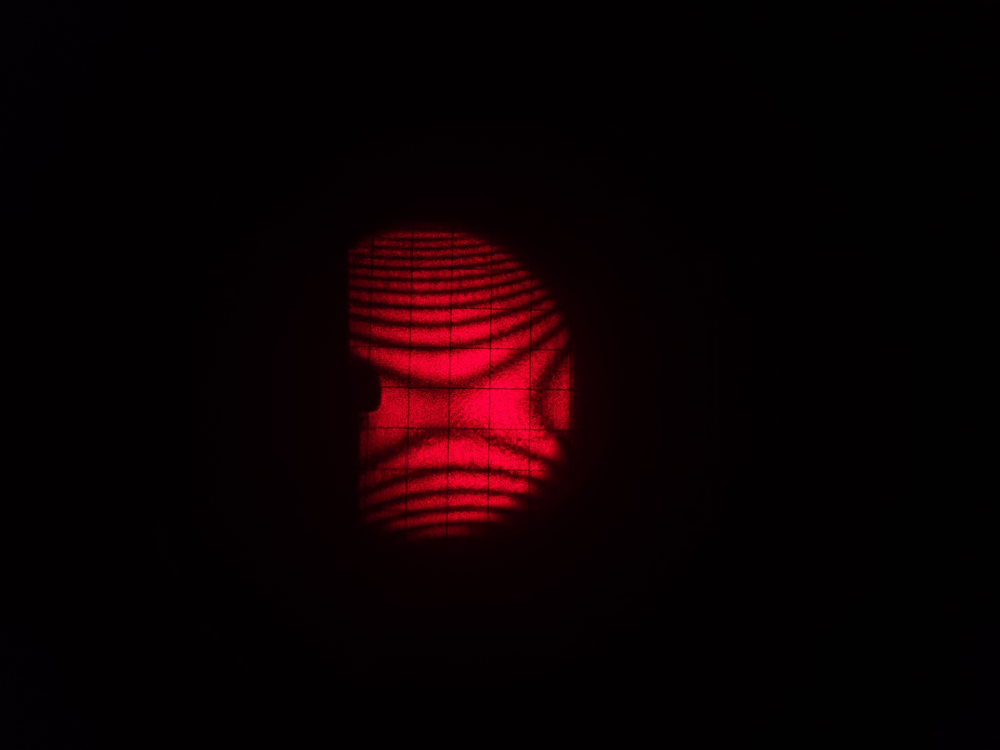

LED 指示灯状态
厚度值（单位 mm）
设薄膜厚度为 t
t1均值 = ?，t2均值 = ?
厚度变化 Δt = ?
厚度变化 Δt = ?
动镜移动距离（单位 mm）
设动镜距离 d
距离变化 Δd = ?
折射率
折射率计算公式：n = Δd / Δt + 1
折射率 n = ?
A类不确定度
公式：
平均值：𝑋̄ = (1/N) ∑Xᵢ
标准差：S = √(1/(N-1) ∑(Xᵢ - 𝑋̄)²)
不确定度：δₐ = S / √N
n₁ = ?
n₂ = ?
n₃ = ?
n₄ = ?
n₅ = ?
B类不确定度
仪器给定：
厚度不确定度：Sₜ = 0.004 / √3
移动距离不确定度：SΔd = 0.005 / √3
厚度不确定度：Sₜ = 0.0023移动距离不确定度：SΔd = 0.0029
总不确定度
U = √(A² + B²)
总不确定度 U = ?
图像区 
曲线区
当前绘制（单选）
当前展示（可多选）